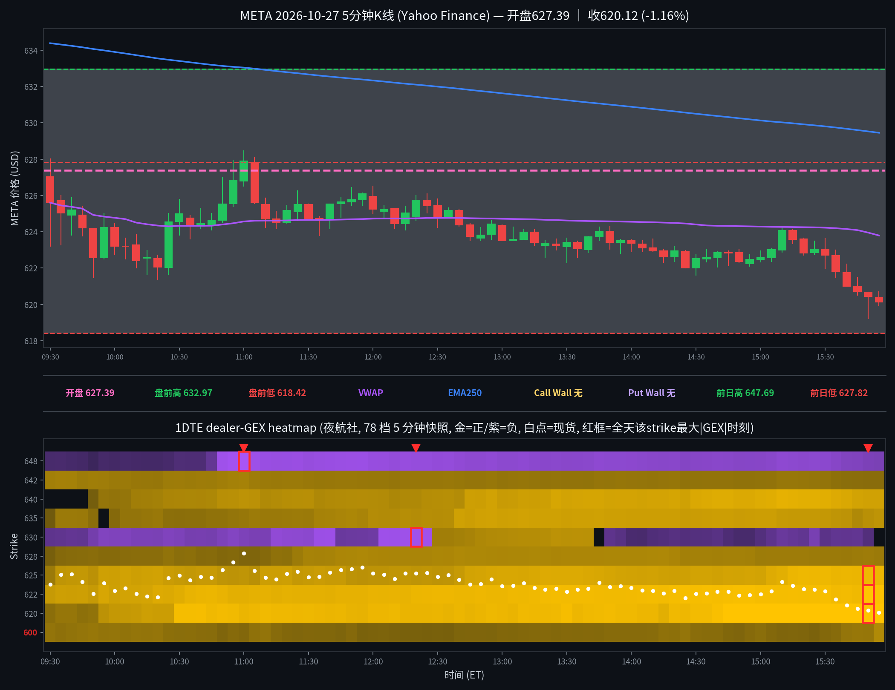

META 日内报告
2026年10月27日 · 周二 · 日内报告
早盘分析
（Junk-man 早盘简报未抓取到，留空待补）
（待补充 Junk-man 当日 #junkman-analysis 原文）
5 分钟 K 线 × 1DTE heatmap
1DTE（2026-10-28到期），夜航社 78 档 5 分钟快照；白点为每档现货位置

heatmap解读（1DTE（2026-10-28到期），夜航社 78 档 5 分钟快照）
GEX 地形图（1DTE（2026-10-28到期），夜航社 78 档 5 分钟快照）：金色=正 gamma 区（做市商对冲减速带/墙），紫色=负 gamma 区（加速带）。白点为每档现货位置。
- 金色带（收盘帧）：620(+14.1M，收盘 king)/622.5(+12.5M)/625(+10.6M)/640(+7.7M)；现价 ±5 点内 620–625 三连正节点合计 +37.2M，正 gamma 包围
- 紫色带（收盘帧）：610(-6.9M)/647.5(-5.4M)；上方最近负节点 630 尾盘仅 -2.7M，负 gamma 稀薄、无加速带
- 全天最大节点：620(+14.5M@15:50)、647.5(-12.7M@11:00)、622.5(+12.7M@15:50)、630(-11.4M@12:20)、625(+10.9M@15:50)
- 结构特点：总 gamma 全天为正（开盘 +19.5M → 收盘 +49.0M），正 gamma 包围的慢速磨跌日；收盘价在 VWAP(623.79)下方、EMA250(629.45)下方
全天最大节点 TOP5
一、620（收盘钉住承接带）：全天变化——09:30 +2.4M → 10:30 +11.6M → 15:50 +14.5M 峰值 → 收盘 +14.1M；影响时段——10:30 起破 10M 后全天未再跌破，午后价格磨向 620 一带时持续增厚；影响方式——收盘 king，尾盘低点 619.21 探至其下沿后收回 620 上方（收 620.12），620–622.5 双层承接带成型。
二、647.5（上方远端负簇）：全天变化——09:30 -0.9M → 11:00 -12.7M 峰值 → 午后 -7~-9M → 收盘 -5.4M；影响时段——11:00 前后加深与全天高点 628.46（11:00 根）同步；影响方式——距现价约 27 点，全天价格未靠近，仅为上方加速背景、不直接作用。
三、622.5（开盘最强正节点，全天单调增厚）：全天变化——09:30 +6.7M → 10:30 +9.3M → 15:50 +12.7M 峰值 → 收盘 +12.5M；影响时段——开盘即最强正节点之一，全天只增不减；影响方式——与 620 组成 620–622.5 双层承接带，价格午后在其下方磨、收盘仍在其下方 2.4 点。
四、630（上方最近负簇，午间曾翻正）：全天变化——09:30 -2.4M → 12:20 -11.4M 峰值 → 12:30–13:30 翻正 +3.7~+5.6M → 尾盘回负 -2.7M；影响时段——午间价格 624–626 磨顶时上方压力暂时让位；影响方式——全天价格未触及 630，翻正未转化为上行，尾盘随价格下移重新转负。
五、625（现价上方最近正节点）：全天变化——09:30 +3.3M → 09:35 +6.1M → 午后 +8~11M → 15:50 +10.9M 峰值 → 收盘 +10.6M；影响时段——开盘后即站稳 6M 上方，午后与 620/622.5 共同加厚；影响方式——收盘与 620/622.5 组成 620–625 正 gamma 包围带（合计 +37.2M），现价收在其下方 4.9 点，慢速结构的顶盖。
亮度口径：p99 截断做上限；红框 = 全天该 strike 最大 |GEX| 时刻。
资金流（1DTE到期2026-10-28，16笔；premium≥$20万｜size≥50｜DTE≤1｜side=B/M/A）
| 时间 | Strike | C/P | DTE | Fill | Bid/Ask | Side | Size | Prem | Vol | OI |
|---|---|---|---|---|---|---|---|---|---|---|
| 09:42:03 | 600.0 | CALL | 1 | $25.00 | 25.00 / 25.35 | BID | 100 | $0.250M | 100 | 154 |
| 09:52:06 | 600.0 | CALL | 1 | $23.50 | 23.50 / 23.70 | BID | 100 | $0.235M | 222 | 154 |
| 10:32:39 | 620.0 | PUT | 1 | $4.65 | 4.65 / 4.70 | BID | 435 | $0.202M | 4465 | 1489 |
| 11:46:22 | 630.0 | CALL | 1 | $4.70 | 4.70 / 4.75 | BID | 807 | $0.379M | 10646 | 280 |
| 12:34:04 | 630.0 | CALL | 1 | $4.10 | 4.10 / 4.15 | BID | 1117 | $0.458M | 14040 | 280 |
| 14:15:38 | 600.0 | CALL | 1 | $23.30 | 23.30 / 23.45 | BID | 100 | $0.233M | 393 | 154 |
| 14:29:09 | 600.0 | CALL | 1 | $22.60 | 22.60 / 22.75 | BID | 100 | $0.226M | 404 | 154 |
| 14:34:17 | 600.0 | CALL | 1 | $23.20 | 23.00 / 23.20 | ASK | 100 | $0.232M | 597 | 154 |
| 14:49:48 | 600.0 | CALL | 1 | $23.50 | 23.45 / 23.50 | ASK | 100 | $0.235M | 699 | 154 |
| 14:54:58 | 600.0 | CALL | 1 | $22.90 | 22.90 / 23.05 | BID | 100 | $0.229M | 849 | 154 |
| 15:05:02 | 600.0 | CALL | 1 | $23.20 | 23.05 / 23.20 | ASK | 100 | $0.232M | 952 | 154 |
| 15:32:47 | 600.0 | CALL | 1 | $23.10 | 23.10 / 23.25 | BID | 100 | $0.231M | 1105 | 154 |
| 15:35:45 | 600.0 | CALL | 1 | $23.50 | 23.40 / 23.50 | ASK | 100 | $0.235M | 1205 | 154 |
| 15:38:31 | 600.0 | CALL | 1 | $22.60 | 22.60 / 22.70 | BID | 100 | $0.226M | 1286 | 154 |
| 15:44:37 | 600.0 | CALL | 1 | $22.00 | 22.00 / 22.05 | BID | 100 | $0.220M | 1405 | 154 |
| 15:58:15 | 600.0 | CALL | 1 | $20.67 | 20.65 / 20.85 | BID | 468 | $0.967M | 1599 | 154 |
16笔全部为10/28到期1DTE大单（无mid单）：偏多5笔$1.14M / 偏空11笔$3.65M，名义偏空；但成色极差，不作方向证据——$4.79M总premium中$3.75M（78%）是深实值C600的反复100张小单（现货620–625时行权600，premium $20.7–25.0几乎全是内在价值，bid/ask双向换手），应为换手/了结而非方向押注。唯一近钱单：10:32 P620 bid $0.20M（435张，现货624.68，OTM put卖出→偏多口径）与11:46/12:34 C630 bid $0.84M（现货约624.8–625.5，OTM call卖出→偏空口径），两者对冲、无干净方向簇。
分析总结
价格行为 × 1DTE GEX 结构复盘
① 开盘 627.39（官方），全天 619.21–628.46，收 620.12（-1.64% vs 昨收 630.47；收开差 -7.27）。非事件日（lib 无条目；META 财报已过 10-21；FOMC 决议在明日 10-28）。
② 白点轨迹：开 627.39（已在前日低 627.82 下方）→ 首根 5m 收 625.59 → 09:40–10:20 在 622–626 磨 → 11:00 摸高 628.46（全天高，未触盘前高 632.97）→ 午后逐级下移 → 15:50 低 619.21 → 收 620.12。盘前高 632.97 与盘前低 618.42 全天均未触及（最低 619.21，距盘前低 0.79 点）。
③ 结构：开盘总 gamma +19.5M → 收盘 +49.0M；620 节点全天增厚约 6 倍（+2.4M → +14.5M 峰值），收盘 620–625 正 gamma 包围带 +37.2M；价格收在 VWAP 623.79 下方、EMA250 629.45 下方——慢速磨跌日，空头有结构支撑但无加速（负 gamma 稀薄）。
④ Junk-man 简报未验证（见 junkman 字段）：当日无独立 META 简报消息，墙位记 null；收盘算法关键位见明日预测（算法值，非简报墙）。
K线=Yahoo Finance 5分钟；heatmap=夜航社 dealer-GEX 5分钟快照；heatmap亮度=平方根连续渐变（p99裁剪）。
收盘后的静态快照；页面不在打开时更新行情。